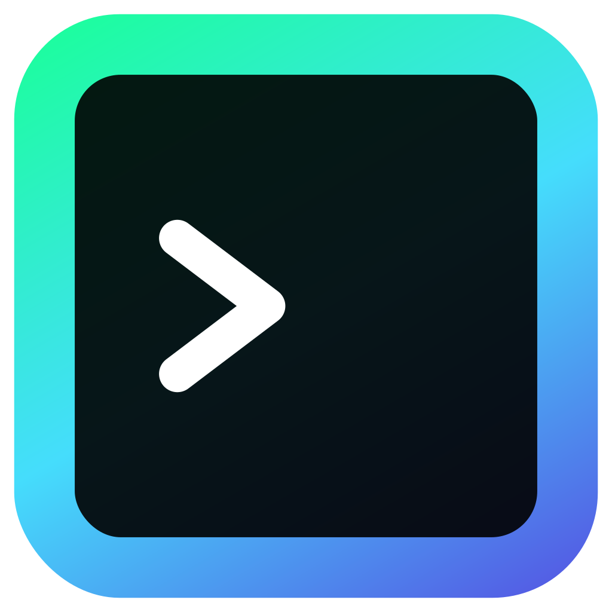

input-terminal



input-terminal
by N. Escobar / nickesc
Turn any HTMLInputElement into a terminal interface
input-terminal
HTMLInputElement into a terminal interface
About input-terminal
input-terminal allows you to turn any HTMLInputElement into a terminal interface. Define custom commands that can be executed by users, track command history, autocomplete commands, and more.
Install
Install input-terminal via NPM:
npm i input-terminal
Import the Terminal and Command classes in your TypeScript or JavaScript file:
import { Terminal, Command } from "input-terminal";
Basic Usage
The example below demonstrates how to instantiate a new Terminal, create a new Command, and add it to the Terminal's command list.
import { Terminal, Command } from "input-terminal";
// Get the input element from your HTML
const input = document.getElementById("terminal") as HTMLInputElement;
// Create a new terminal instance
const terminal = new Terminal(input);
// Create and add a command
const say = new Command("say", (args, options, terminal) => {
alert(args[1] ?? "nothing");
});
terminal.bin.add(say);
// Initialize the terminal
terminal.init();
Reference
For full documentation of the module and its methods, please see the Documentation.
License
input-terminal is released under the MIT license. For more information, see the repository's LICENSE file.